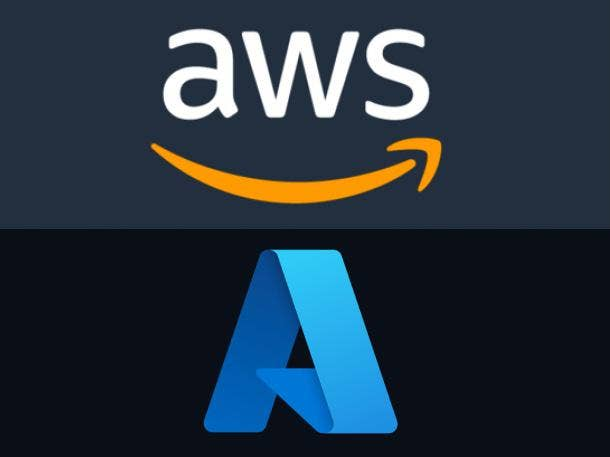

Proyectos
Aquí podrás ver algunos de los proyectos que he realizado relacionados con administración de sistemas y ciberseguridad. (Próximamente)
Sobre mí
Profesional en Administración de Sistemas con más de dos años de experiencia gestionando entornos híbridos Linux/Windows, especializado en automatización, virtualización y ciberseguridad operativa. Cuento con una formación especializada en Administración de Sistemas y Redes y ciberseguridad (SOC Analyst) lo que me permite anticipar riesgos y reforzar la seguridad de infraestructuras críticas.
He liderado proyectos de alta disponibilidad, scripting para optimización de tareas y despliegue de soluciones seguras tanto on-premise como en la nube (AWS, Azure). Participo activamente en ejercicios Red Team/Blue Team y gestión de incidentes, aportando valor en la resiliencia operativa, monitorización y respaldo de datos.
Además de mi formación técnica, destaco por una sólida capacidad de análisis y resolución de problemas, incluso en entornos de alta presión. Me comunico con eficacia con equipos multidisciplinares y me adapto con flexibilidad a las necesidades de cada proyecto, ya sea trabajando de forma autónoma o colaborativa. Tengo un enfoque meticuloso en la automatización de procesos y el análisis de registros (logs), y mantengo un compromiso constante con la mejora continua, incorporando nuevas tecnologías para optimizar sistemas y flujos de trabajo existentes.
Tecnologías que utilizo
-
➤
Sistemas Operativos
- Linux: Debian, RHEL 9, Ubuntu Server
- Windows: Windows Server, Active Directory
-
➤
Virtualización y Alta Disponibilidad
-
➤
Automatización y Scripting

-
➤
Redes

-
➤
Cloud Computing

-
➤
Seguridad Operativa y Hardening
- Hardening de servidores
- SIEM (Wazuh)
- Gestión centralizada de logs
- Resiliencia de datos (Backups bajo regla 3-2-1)
- Ejercicios Red Team / Blue Team
- Documentación de incidentes

-
➤
Gestión de Identidad y Acceso
Títulos
- AWS Certified Cloud Practitioner – Amazon Web Services
- Cisco Certified Network Associate (CCNA) – Cisco Systems
- Cambridge English Level B2 Certificate – (Puntuación 182/190)
- Google Cybersecurity Professional Certificate – Google
- Actualmente en preparación para las certificaciones de ciberseguridad CompTIA Security+ y BLT1
- Grado superior en Administración de Sistemas Informáticos y Redes (Calificación media final: 9,53)
Estas titulaciones y certificaciones avalan mis conocimientos en administración de sistemas, redes, cloud, ciberseguridad y competencias en inglés, demostrando mi compromiso con la formación continua y la excelencia profesional.
Experiencia
Administrador de Redes y Sistemas | Especialista en Ciberseguridad
Postgrados Odontología, UCAM | Ago 2024 – Actualidad
-
➤
Implementación y administración de servidores Active Directory
- Desplegué un servidor Windows Server 2019 como Controlador de Dominio primario, configurando servicios esenciales (DNS, DHCP y Catálogo Global) y estableciendo un esquema de unidades organizativas (OU) basado en departamentos y niveles de acceso.
- Migré más de 50 usuarios al nuevo dominio, preservando perfiles, permisos de carpetas compartidas y mapeo de impresoras.
- Definí y apliqué Directivas de Grupo (GPO) para reforzar la seguridad aplicando políticas de bloqueo de dispositivos externos, configuración de discos cifrados BitLocker, restricciones de software...etc.
-
➤
Seguridad Perimetral y Monitorización
- Desplegué y configuré firewalls Sophos with inspección SSL/TLS, IPS y segmentación en zonas de seguridad, disminuyendo ataques internos.
- Administré un sistema de SIEM con Wazuh y centralización de logs, reduciendo el tiempo medio de detección de amenazas (MTTD).
-
➤
Administracion y hardening de bases de datos SQL
- Diseñé, administré y optimicé bases de datos PostgreSQL en un servidor RHEL 9 con políticas de hardening, definiendo esquemas para la gestión de registros de inventario, usuarios, facturación, proveedores y documentación corporativa. Además, integré la base de datos con Metabase para el desarrollo de dashboards e informes interactivos, acortando el tiempo de generación de reportes y habilitando el acceso seguro y centralizado a la información.
-
➤
Operaciones Cloud y Alta Disponibilidad
- Diseñé e implementé backups bajo la regla 3-2-1 en la nube haciendo copias de seguridad de servicios críticos o información sensible de la empresa además de automatizar copias de seguridad de máquinas virtuales VMWare con Powershell.
-
➤
Gestión de Identidad y Acceso (IAM)
- Implementé políticas de acceso condicional y MFA en Entra ID (Azure AD), reduciendo incidentes de acceso no autorizado.
- Diseñé y apliqué roles RBAC para SharePoint y Exchange Online, logrando un control granular de permisos.
Administrador de Sistemas y Redes Híbridas
Instituto Innovación Tecnológica (ISITEC) | Sep 2022 – Feb 2024
-
➤
Migración a entornos cloud y gestión de identidades
- Lideré la transición de más de 300 usuarios a Office 365, integrando identidades en Azure AD; esto redujo costes de licencias y potenció la colaboración mediante SharePoint y Teams.
- Configuré identidades híbridas (Azure AD + Active Directory) para 300+ usuarios, asegurando la sincronización y el cumplimiento de políticas de seguridad entre los entornos on-premise y cloud.
- Diseñé e implementé flujos con Azure Logic Apps para automatizar el aprovisionamiento de usuarios en el sistema IAM, acortando los tiempos de incorporación y minimizando errores manuales.
-
➤
Administración y mantenimiento de servidores
- Rediseñé y consolidé más de 5 servidores Windows Server y Linux, estableciendo políticas automatizadas de parcheo que elevaron la estabilidad y redujeron el downtime mensual.
-
➤
Gestión de redes WAN y VPN
- Reestructuré la red WAN corporativa, implantando balanceo de carga y VPN site-to-site, lo que optimizó el rendimiento de la red en un 40%.
- Definí e instauré políticas de segmentación de tráfico en entornos VMware y Hyper-V, reforzando la seguridad interna y limitando el alcance de posibles brechas.
-
➤
Virtualización y alta disponibilidad
- Supervisé la infraestructura virtual basada en VMware y Hyper-V, mejorando la eficiencia en la asignación de recursos TI.
- Implementé soluciones de alta disponibilidad para servidores críticos, garantizando un 99% de uptime y continuidad de negocio.
-
➤
Automatización y scripting
- Desarrollé scripts en PowerShell, Python y Bash para automatizar tareas recurrentes, reduciendo drásticamente los tiempos de ejecución.
- Creé herramientas de gestión de usuarios y permisos en Active Directory que ahorraron aproximadamente 10 horas mensuales en tareas manuales.
Contacto
© Dise√±o base: HTML5 UP